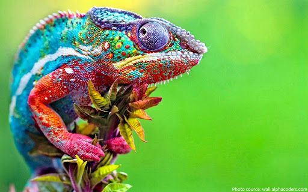
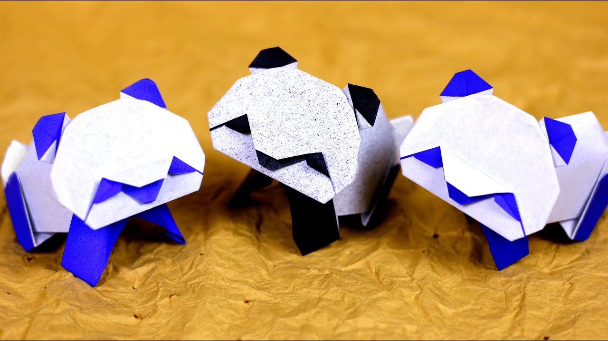

1)Camel is known as the ship of the DESSERT and we are going to make it, Let's Start
2)Fold the paper in half.
3)Fold the paper in half again.
4)Open the top flap of paper over to the right.
5)Squash Fold this flap down.
6)Turn the paper over.
7)Open the top flap of paper over to the left and Squash Fold it down.
8)Fold and Unfold the sides and the top along the dotted lines. You’ll use these creases in the next step.
9)Open up the top layer of paper and fold it up using the crease from the previous step.
10)Fold in both sides along the existing creases making a Petal Fold.
11)Turn the paper over.
12)Inside Reverse Fold the tip of the head.
13)Fold the back of the leg inside the model along the dotted line. Repeat on the other side.
FINALLY Play with your CAMEL
Chameleons MAINLY CHANGE COLOR IN ORDER TO COMMUNICATE OR REGULATE BODY TEMPERATURE. Let's make it.
Step 1) Fold and unfold the paper in half both ways. Then fold the top and bottom to the centre.
Step 2) Fold and unfold both sides to the centre.
Step 3) Fold all the corners down along the diagonal dotted lines.
Step 4) Open up each corner and Squash Fold them flat. See the next step to see how each corner looks after the Squash Fold.
Step 5) Turn the paper over.
Step 6) Fold the edges of the paper down along the dotted lines.
Step 7) Turn the paper over.
Step 8) Fold the 4 flaps of paper out along the dotted lines
Step 9) Fold the paper in half over to the back.
Step 10) Inside Reverse Fold the paper up along the dotted line.
Step 11) Outside Reverse Fold the other side of the model down along the dotted line to form the tail.
Step 12) Make another Outside Reverse Fold on the end of the tail.
FINALLY Play with your Chameleon
Pigeons are highly sociable animals.
1)Fold the paper in half and then unfold it.
2)Fold the paper in half the other way.
3)Fold both layers of paper to the right along the dotted line.
4)Fold the top layer of paper to the left along the dotted line.
5)Fold the model in half down along the dotted line.
6)Make an Inside Reverse Fold using the crease from the previous step.
FINALLY Play with your Pigeon
Giant pandas are good at climbing trees and can also swim.
Step 1) Fold and unfold the paper in half both ways.
Step 2) Fold both sides in along the dotted lines.
Step 3) Fold and unfold the bottom and top along the dotted lines.
Step 4) Fold the paper behind along the dotted line.
Step 5) Turn the paper over.
Step 6) Fold the top of the paper down along the dotted line.
Step 7) Fold the paper up along the dotted line.
Step 8) Fold and unfold the paper in half and leave slightly folded to give a 3D look.
FINALLY Play with your PANDA